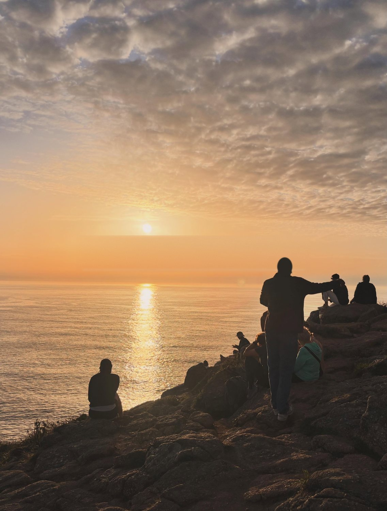

Santiago
聖殿的終點
CAMINHO PORTUGUÊS · 9/10—9/28
19 天，從 Porto 的地鐵末站起步。跨過國境、走進石與水，搭船循著傳說抵達 Padrón，最後把路交給大西洋。
沿著黃色箭頭出發 ↓01 / THE ROUTE
先沿中央線向北，從 Valença 徒步跨越國境；在 Pontevedra 轉身走入靈性線；抵達 Santiago 後，再往西追尋古人眼中的世界盡頭。
地圖標記和下方每日卡片會彼此連動。黃色箭頭是步行，水藍色虛線是從 Vilanova de Arousa 前往 Padrón 的船程。

中央線通往 Santiago；靈性線則先把人帶向 Armenteira 的修道院、石與水之路，以及 Arousa 河口。繞遠一點，讓抵達不只是一個終點。
從 Vilanova de Arousa 乘船前往 Padrón，海上段連起靈性線最具象徵性的篇章。Padrón 是遺體傳說進入西班牙的「入口」，Santiago 則是被發現與最終安息的「聖殿」。

聖殿的終點
陸地的終點
內在旅程的終點